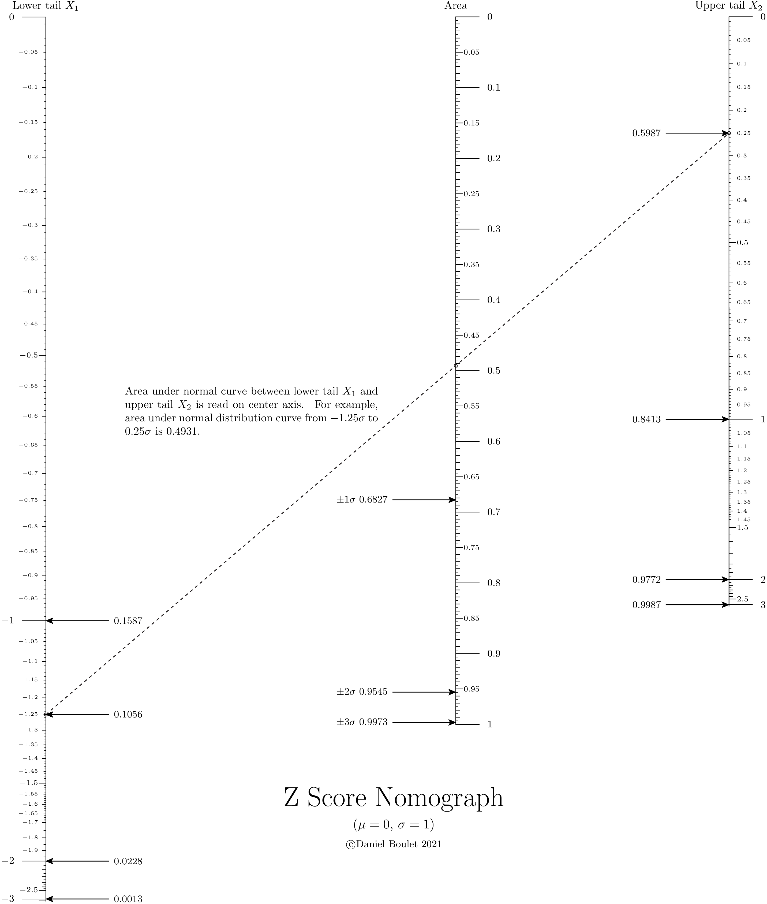
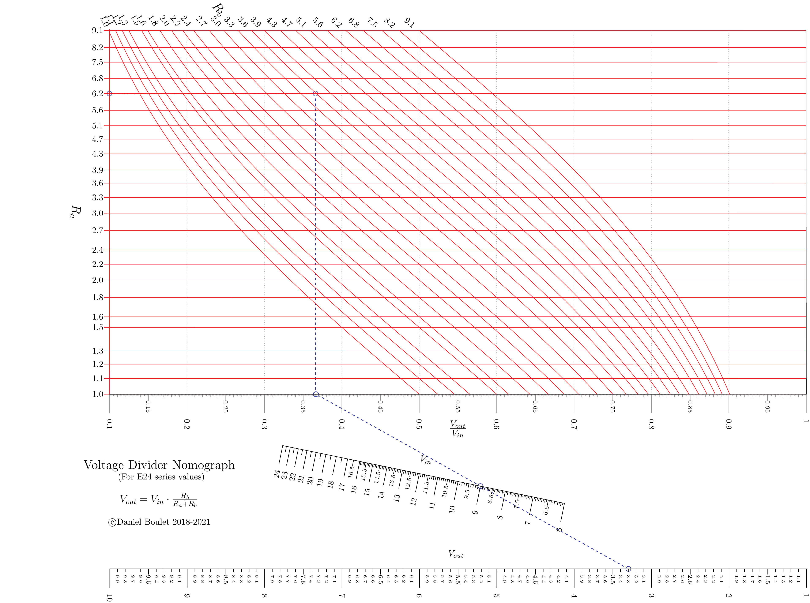
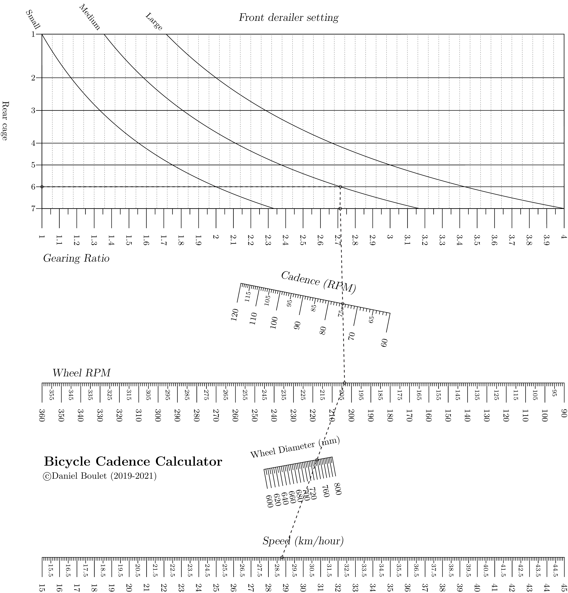
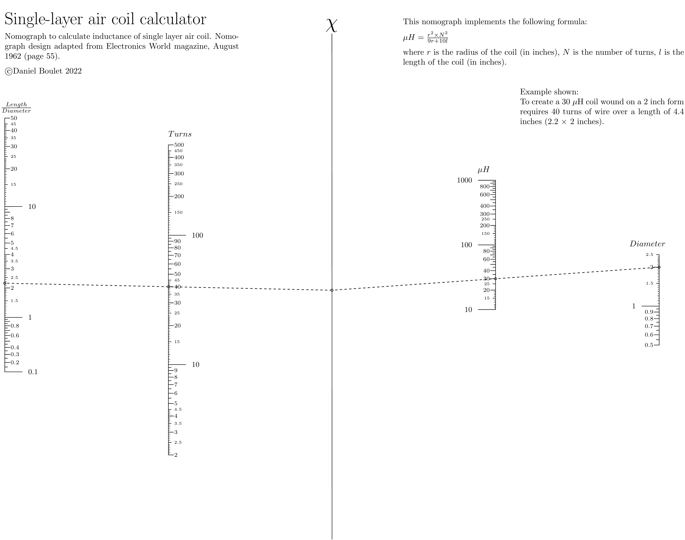
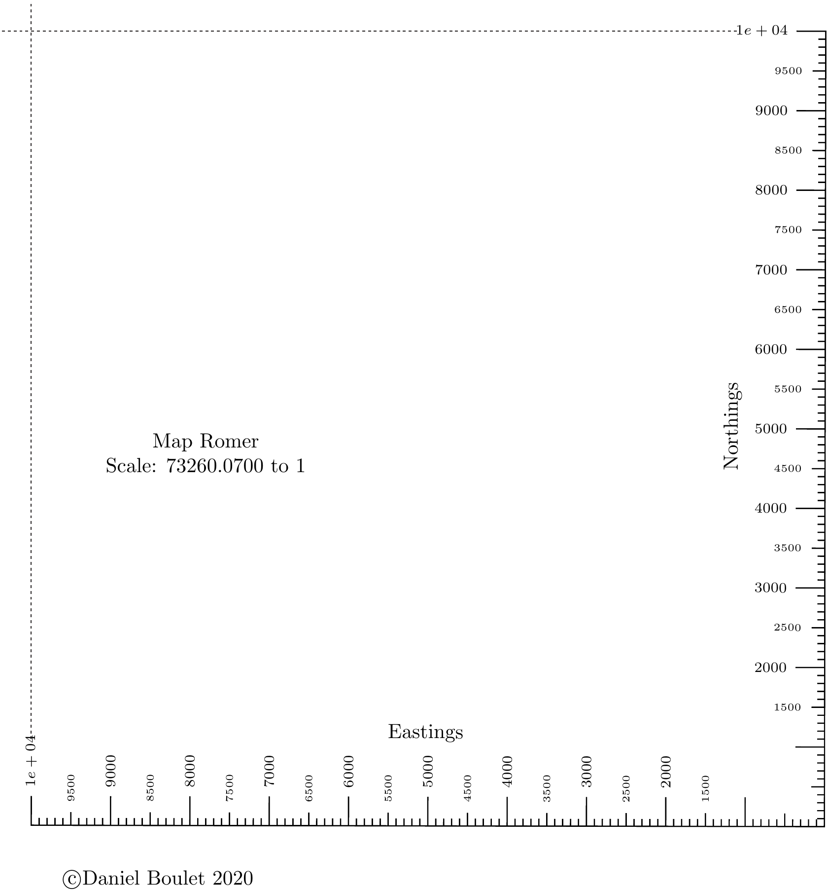

mynomos¶
These nomographs were created with the PyNomo package. These examples help illustrate the range of problems that can be solved with nomographs. Some of the examples below are also included in the PyNomo documentation.
Search Planner¶
Grid searches are slow and labour intensive. Search planner will want to allocate scarce resources (searchers and time) appropriately. Knowing the length of time required to search a parcel of land can help assign resources effeciently.
Nomograph¶
Source code¶
1"""
2search_planner.py
3
4Nomogram to calculate search effort for ground search activities.
5along with this program. If not, see < http: // www.gnu.org/licenses/>.
6"""
7from pynomo.nomographer import Nomographer
8import sys
9outputfile = sys.argv[0].split('.')[0]+'.pdf'
10
11from pyx import *
12text.set(text.LatexEngine)
13
14searchers = {
15 'ID': 'searchers',
16 'u_min': 3.0,
17 'u_max': 8.0,
18 'function': lambda u: 1.0 / u,
19 'scale_type': 'linear',
20 'title': r'Number of searchers',
21 'title_distance_center': -1.25,
22 'tick_levels': 1,
23 'tick_text_levels': 1,
24 'tick_side': 'left',
25 'grid_length_0': 0.5,
26 'text_distance_0': 0.75,
27 'title_draw_center': True,
28 # 'title_opposite_tick': False,
29 # 'text_horizontal_align': True,
30 'extra_angle': 90.0
31
32}
33
34
35hectares = {
36 'ID': 'hectares',
37 'u_min': 1.0,
38 'u_max': 20.0,
39 'function': lambda u: u*10000.0,
40 # 'title': r'Search area ($Ha$)',
41 'extra_titles': [
42 {
43 'text': r'Search \par area ($Ha$)',
44 'dx': -1.5,
45 'dy': 0.7
46 }
47 ],
48
49 'tick_levels': 3,
50 'tick_text_levels': 1,
51 'tick_side': 'left',
52 'grid_length_0': 0.5,
53 'grid_length_1': 0.3,
54 'text_distance_0': 0.8,
55 'scale_type': 'linear smart'
56}
57
58distance1 = {
59 'ID': 'distance1',
60 'tag': 'distance',
61 'scale_type': 'linear smart',
62 'u_min': 0.5,
63 'u_max': 5.0,
64 'function': lambda u: u*1000,
65 'align_function': lambda u: u * 1000,
66 'extra_titles': [
67 {
68 'text': r'Distance \par ($km$)',
69 'dx': -0.5,
70 'dy': 0.65
71 }
72 ],
73 'grid_length_0': 0.5,
74 'grid_length_1': 0.3,
75 'text_distance_0': 0.65,
76 'tick_levels': 3,
77 'tick_text_levels': 1,
78 'tick_side': 'right',
79}
80
81spacing = {
82 'ID': 'spacing',
83 'u_min': 2.0,
84 'u_max': 15.0,
85 'function': lambda u: u,
86 # 'scale_type': 'manual point',
87 # 'manual_axis_data': {2.5: '2.5', 5.0: '5.0', 10: '10', 15: '15'},
88 'title': r'Searcher spacing ($m$)',
89 'title_draw_center': True,
90 'title_opposite_tick': False,
91 'tick_text_levels': 1,
92 'tick_levels': 2,
93 'grid_length_0': 0.5,
94 'grid_length_1': 0.2,
95 'text_distance_0': .8,
96 'title_distance_center': -1.5,
97 'text_horizontal_align': True,
98 'extra_angle': 90.0,
99 'turn_relative': True,
100
101 # 'extra_params': [
102 # {
103 # 'u_min': 2.5,
104 # 'u_max': 15.0,
105 # 'scale_type': 'linear',
106 # 'tick_levels': 3,
107 # 'tick_text_levels': 1,
108 # 'tick_side': 'right',
109 # }
110 # ]
111}
112
113area_block = {
114 'ID': 'area_block',
115 'block_type': 'type_4',
116 'height': 8,
117 'width':8,
118 'f1_params': hectares,
119 'f2_params': distance1,
120 'f3_params': spacing,
121 'f4_params': searchers,
122 'reference_color': color.cmyk.Gray,
123 'padding': .9,
124 'isopleth_values': [['x', 3.0, 7.5, 6]],
125}
126
127distance2 = {
128 # distance in meters (u3)
129 'ID': 'distance2',
130 'tag': 'distance',
131 'u_min': 0.5,
132 'u_max': 5.0,
133 'scale_type': 'manual_point',
134 'function': lambda u: u*1000,
135 'tick_levels': 0,
136 'tick_text_levels': 0,
137 # 'title_x_shift': 1.0,
138}
139
140speed_km_h = {
141 # speed in km/hr
142 'ID': 'speed_in_km_per_hr',
143 'tag': 'speed',
144 'u_min': 1.0,
145 'u_max': 5.0,
146 'function': lambda u: u*1000/3600,
147 'title': r'Speed ($\frac{km}{hr}$)',
148 'tick_levels': 3,
149 'tick_text_levels': 2,
150 'title_x_shift': 0.0,
151 'title_draw_center': True,
152 'title_distance_center': -1.4,
153 'grid_length_0': 0.5,
154 'grid_length_1': 0.3,
155 'text_distance_0': 0.8,
156 'text_distance_1':0.35
157
158}
159
160
161time_required = {
162 # time in minutes
163 'ID': 'time_required',
164 'u_min': 15.0,
165 'u_max': 120.0,
166 'function': lambda u: u*60,
167 # 'title': r'Time required ($min$)',
168 'tick_levels': 3,
169 'tick_text_levels': 2,
170 'title_x_shift': 1.0,
171 'extra_titles': [
172 {
173 'text': r'Time \par required \par ($min$)',
174 'dx': -0.5,
175 'dy': 1.2
176 }
177 ],
178
179}
180
181distance_speed_time_block = {
182 'block_type': 'type_2',
183 'f1_params': distance2,
184 'f2_params': speed_km_h,
185 'f3_params': time_required,
186 'isopleth_values': [[3.0, 'x', 90]],
187 'mirror_x': True
188}
189
190speed_min_100meter = {
191 # speed in minutes / 100 meters
192 'ID': 'speed_sec_meter',
193 'u_min': 0.72*100/60,
194 'u_max': 3.6*100/60,
195 'function': lambda u: u/100*60,
196 'title': r'Pace ($\frac{min}{100\cdot m}$)',
197 'tick_levels': 3,
198 'tick_text_levels': 2,
199 'title_draw_center': True,
200 'scale_type': 'linear smart',
201 'tick_side': 'left',
202 'title_distance_center': -1.6,
203 'grid_length_0': 0.5,
204 'grid_length_1': 0.3,
205 'text_distance_0': 0.8,
206 'text_distance_1': 0.35
207
208}
209
210
211distance_speed_time_block2 = {
212 'ID': 'distance_speed_time_block2',
213 'block_type': 'type_2',
214 'f1_params': time_required,
215 'f2_params': speed_min_100meter,
216 'f3_params': distance2,
217 'isopleth_values': [[90, 'x', 3.0]],
218 'width':10,
219 'mirror_x': True,
220
221}
222
223main_params = {
224 'filename': outputfile,
225 'paper_height': 8,
226 'paper_width': 16,
227 'block_params': [area_block, distance_speed_time_block, distance_speed_time_block2],
228 'transformations': [('rotate', 0.01), ('scale paper',), ],
229 'title_str': r'\Large \textbf{Grid search time and resource calculator}',
230 'title_y': 10.0,
231 'title_x':10,
232 # 'make_grid': True,
233 # 'debug': True,
234 'isopleth_params': [
235 # {'color': 'black',
236 # 'linewidth': 'thin',
237 # 'linestyle': 'solid',
238 # 'circle_size': 0.08,
239 # 'transparency': 0.0,
240 # },
241 {'color': 'black',
242 'linewidth': 'thin',
243 'linestyle': 'dashed',
244 'circle_size': 0.05,
245 'transparency': 0.25,
246 },
247 ],
248 'extra_texts': [
249 {
250 'x': 9.0,
251 'y': 0.0,
252 'text': r'\small \noindent Example shown: \par \noindent Six searchers spaced 7.5 meters apart \
253 need to walk 3 kilometers to search an area of 13.5 hectares. If the team travels at \
254 2 kilometers per hour (or covers 100 meters every 3 minutes) they will need 90 minutes to \
255 cover the assigned area.',
256 'width': 8,
257 },
258 {
259 'x': 14.2,
260 'y': -2.0,
261 'text': r'\tiny \copyright Daniel Boulet 2020',
262 'width': 5.0,
263 },
264 {
265 'x': 1,
266 'y': 7.0,
267 'text': r'$\frac{Area}{Distance}=Searchers \times Spacing$',
268 'width': 10.0,
269
270 },
271
272 ],
273
274
275}
276
277
278Nomographer(main_params)
Z score calculator¶
Theory and background¶
This example extends Pynomo’s versatility by using external libraries.
Python’s scipy library is the engine behind this nomograph
which calculates the area under a normal distribution curve between
two Z scores (one negative, the other positive).
To calculate the area between two Z scores (\(Z_{upper}\), \(Z_{lower}\)) of a normal distribution one must compute the difference between the respective probability density functions \(\mathrm{PDF}(Z_{upper})\) and \(\mathrm{PDF}(Z_{lower})\). [wik07]
Recall that the functional relationship for a Type 1 block is:
\(F1(u_1)+F2(u_2)+F3(u_3)=0\)
and
\(\mathrm{Area} = \mathrm{PDF}(Z_{upper}) - \mathrm{PDF}(Z_{lower})\)
therefore
\(\mathrm{PDF}(Z_{upper}) - Area - \mathrm{PDF}(Z_{lower})=0\).
Two Type 8 axes are aligned with \(\mathrm{PDF}(Z_{upper})\) and \(\mathrm{PDF}(Z_{lower})\) to align a Z score with its associated PDF.
Nomograph¶
Source code¶
1"""
2 zscore.py
3
4 Nomograph to calculate area under normal curve from z-score.
5"""
6
7import scipy.stats as stats
8from pynomo.nomographer import *
9import sys
10outputfile = sys.argv[0].split('.')[0]+'.pdf'
11
12sys.path.insert(0, "..")
13# allows use of latex commands in PyX such as \frac{a}{b} and \par
14from pyx import *
15
16pyx.text.set(text.LatexEngine)
17
18
19def cdf(u):
20 return stats.norm.cdf(u)
21
22
23def ppf(u):
24 return stats.norm.ppf(u)
25
26
27lmin = 0.0001
28lmax = 0.9999
29
30sd1 = cdf(1.0) - cdf(-1.0)
31sd2 = cdf(2.0) - cdf(-2.0)
32sd3 = cdf(3.0) - cdf(-3.0)
33
34
35leftpdf = {
36 "tag": "a",
37 "u_min": lmin,
38 "u_max": 0.5,
39 "function": lambda u: (u),
40 "scale_type": "manual point",
41 # extra parameters
42 "extra_params": [
43 {
44 "scale_type": "manual arrow",
45 "manual_axis_data": {
46 cdf(-1.0): r"%4.4f" % cdf(-1.0),
47 cdf(-2.0): r"%4.4f" % cdf(-2.0),
48 cdf(-3.0): r"%4.4f" % cdf(-3.0),
49 cdf(-1.25): r"%4.4f" % cdf(-1.25),
50 },
51 "arrow_length": 2.0,
52 },
53 ],
54}
55
56
57leftz = {
58 "tag": "a",
59 "u_min": ppf(lmin),
60 "u_max": ppf(0.5),
61 "function": lambda u: cdf(u),
62 "align_func": lambda u: cdf(u),
63 "title": "Lower tail $X_1$",
64 "tick_levels": 5,
65 "tick_text_levels": 4,
66 "scale_type": "linear smart",
67 "tick_side": "left",
68}
69
70
71rightpdf = {
72 "tag": "c",
73 "u_min": 0.5,
74 "u_max": lmax,
75 "function": lambda u: -(u),
76 "scale_type": "manual point",
77 # extra parameters
78 "extra_params": [
79 {
80 "scale_type": "manual arrow",
81 "tick_side": "left",
82 "manual_axis_data": {
83 cdf(3.0): r"%4.4f" % cdf(3.0),
84 cdf(2.0): r"%4.4f" % cdf(2.0),
85 cdf(1.0): r"%4.4f" % cdf(1.0),
86 cdf(0.25): r"%4.4f" % cdf(0.25),
87 },
88 "arrow_length": 2.0,
89 },
90 ],
91}
92
93
94rightz = {
95 "tag": "c",
96 "u_min": ppf(0.5),
97 "u_max": ppf(lmax),
98 "function": lambda u: cdf(u),
99 "align_func": lambda u: cdf(u),
100 "title": "Upper tail $X_2$",
101 "tick_levels": 5,
102 "tick_text_levels": 4,
103 "scale_type": "linear smart",
104}
105
106leftblock2 = {"block_type": "type_8", "f_params": leftz, "isopleth_values": [["x"]]}
107
108
109rightblock2 = {"block_type": "type_8", "f_params": rightz, "isopleth_values": [["x"]]}
110
111
112delta = {
113 "u_min": 0.0,
114 "u_max": 1.0,
115 "function": lambda u: u,
116 "scale_type": "linear smart",
117 "title": "Area",
118 "tick_levels": 5,
119 "tick_text_levels": 4,
120 "extra_params": [
121 {
122 "tick_side": "left",
123 "scale_type": "manual arrow",
124 "manual_axis_data": {
125 sd1: r"$\pm 1 \sigma$ %4.4f" % sd1,
126 sd2: r"$\pm 2 \sigma$ %4.4f" % sd2,
127 sd3: r"$\pm 3 \sigma$ %4.4f" % sd3,
128 },
129 "arrow_length": 2.0,
130 },
131 ],
132}
133
134block_diff = {
135 "block_type": "type_1",
136 "f1_params": leftpdf,
137 "f2_params": delta,
138 "f3_params": rightpdf,
139 "proportion": 1.5,
140 "isopleth_values": [[cdf(-1.25), "x", cdf(0.25)]],
141}
142
143
144main_params = {
145 "filename": outputfile,
146 "paper_height": 11.0 * 2.54,
147 "paper_width": 8.5 * 2.54,
148 "block_params": [block_diff, leftblock2, rightblock2],
149 "cdfations": [("rotate", 0.01), ("scale paper",), ("polygon",)],
150 "title_x": 11.0,
151 "title_y": 3.0,
152 "title_box_width": 15.0,
153 "title_str": r"\Huge Z Score Nomograph \par \medskip \large ($\mu = 0$, $\sigma = 1$) \par \medskip \small \copyright Daniel Boulet 2021",
154 # 'make_grid':True,
155 "extra_texts": [
156 {
157 "x": 2.5,
158 "y": 16.0,
159 "text": r"\noindent Area under normal curve between lower tail $X_1$ and upper tail $X_2$ is read on center axis. \
160 For example, area under normal distribution curve from $%g \sigma$ to $%g \sigma$ is $%4.4f$."
161 % (-1.25, 0.25, cdf(0.25) - cdf(-1.25)),
162 "width": 8.0,
163 },
164 ],
165}
166
167Nomographer(main_params)
VPS Generator Performance¶
This nomograph estimates power generation based on fuel consumption of a Vericor VPS4 Genset.
Nomograph¶

Source code¶
1"""
2 vps4performance.py
3
4 Gas turbine performance nomograph based on Vericor VPS4 genset.
5"""
6from pynomo.nomographer import *
7import sys
8
9sys.path.insert(0, "..")
10outputfile = sys.argv[0].split(".")[0] + ".pdf"
11
12# allows use of latex commands in PyX such as \frac{a}{b} and \par
13from pyx import *
14
15text.set(text.LatexEngine)
16
17
18def watts2btu_hr(watts):
19 return watts * 3.412141633
20
21
22def btu_hr2watts(btu_hr):
23 return btu_hr / 3.412141633
24
25
26def btu2joule(btu):
27 return btu * 1055.06
28
29
30def joule2btu(joule):
31 return joule / 1055.06
32
33
34"""
35this part is the left handside of the total graph
36"""
37
38leftside_u1_left = {
39 "tag": "left_1",
40 # range of values (nominal 3451000.0 W )
41 "u_min": 3.0,
42 "u_max": 4.0,
43 # functions
44 "function": lambda u: u * 1000000.0,
45 # scale type and detail
46 "tick_levels": 4,
47 "tick_text_levels": 3,
48 "scale_type": "linear smart",
49 # tick and title locations
50 "title": r"\large $MW$",
51 "title_x_shift": -1.0,
52 "title_y_shift": 0.5,
53 "tick_side": "left",
54 # extra parameters
55 "extra_params": [
56 {
57 "scale_type": "manual arrow",
58 "manual_axis_data": {
59 3.451: r"VPS4",
60 },
61 "arrow_length": 1.5,
62 },
63 ],
64 # additional title information
65 "extra_titles": [
66 {
67 "dx": -2.0,
68 "dy": 1.5,
69 "text": "\slshape \Large Power Output",
70 # 'width': 5.0
71 },
72 ],
73}
74
75leftside_u1_right = {
76 "tag": "left_1",
77 # range of values (nominal 11778263.0 BTU/hr )
78 "u_min": 3.0 * watts2btu_hr(1000000.0) / 1000000.0,
79 "u_max": 4.0 * watts2btu_hr(1000000.0) / 1000000.0,
80 # functions
81 "function": lambda u: u * 1000000.0,
82 "align_func": lambda u: u / watts2btu_hr(1000000.0) * 1000000.0,
83 # scale type and detail
84 "tick_levels": 4,
85 "tick_text_levels": 3,
86 "scale_type": "linear smart",
87 # tick and title locations
88 "title": r"\large ${\frac{MBTU}{hr}}$",
89 "title_x_shift": 1.0,
90 "title_y_shift": 0.5,
91 "tick_side": "right",
92}
93
94leftside_u2_left = {
95 # range of values (nominal 28%)
96 "u_min": 0.25 * 100.0,
97 "u_max": 0.35 * 100.0,
98 # functions
99 "function": lambda u: u / 100.0,
100 # scale type and detail
101 "tick_levels": 4,
102 "tick_text_levels": 3,
103 "scale_type": "linear smart",
104 # tick and title locations
105 "title": r"\large $\%$",
106 "title_x_shift": -1.0,
107 "title_y_shift": 0.5,
108 "tick_side": "left",
109 # additional title information
110 "extra_titles": [
111 {
112 "dx": -1.5,
113 "dy": 2.0,
114 "text": "\slshape \Large Efficiency / \par Heat Rate",
115 # 'width': 5.0
116 },
117 ],
118 # extra parameters
119 "extra_params": [
120 {
121 "scale_type": "manual arrow",
122 "manual_axis_data": {
123 28.4: r"VPS4",
124 },
125 "arrow_length": 1.5,
126 },
127 ],
128}
129
130leftside_u2_right = {
131 # range of values (nomninal 12025 BTU/kWh )
132 "u_min": watts2btu_hr(100000.0) / 35.0,
133 "u_max": watts2btu_hr(100000.0) / 25.0,
134 # functions
135 "function": lambda u: watts2btu_hr(1000.0) / (u),
136 "text_format": r"$%4.0f$",
137 # 'align_func': lambda u:341300.0/u,
138 # scale type and detail
139 "tick_levels": 4,
140 "tick_text_levels": 3,
141 "scale_type": "linear smart",
142 # tick and title locations
143 "title": r"\large ${\frac{BTU}{kw \cdot hr}}$",
144 "title_x_shift": 1.0,
145 "title_y_shift": 0.5,
146 "tick_side": "right",
147 "title_rotate_text": True,
148}
149
150leftside_u3_left = {
151 "tag": "mid",
152 # range of values (nominal 12325000.0 W )
153 "u_min": 10.0,
154 "u_max": 14.0,
155 # functions
156 "function": lambda u: u * 1000000.0,
157 # scale type and detail
158 "tick_levels": 4,
159 "tick_text_levels": 3,
160 "scale_type": "linear smart",
161 # tick and title locations
162 "title": r"\Large $MW$",
163 "title_x_shift": -1.0,
164 "title_y_shift": 0.5,
165 "tick_side": "left",
166 # additional title information
167 "extra_titles": [
168 {
169 "dx": -1.8,
170 "dy": 1.5,
171 "text": "\slshape \Large Power Input",
172 # 'width': 5.0
173 },
174 ],
175}
176
177leftside_u3_right = {
178 # range of values (nominal 42065225.0 BTU/hr )
179 "u_min": 10.0 * watts2btu_hr(1000000.0) / 1000000.0,
180 "u_max": 14.0 * watts2btu_hr(1000000.0) / 1000000.0,
181 # functions
182 "function": lambda u: u * 1000000.0,
183 "align_func": lambda u: u / watts2btu_hr(1000000.0) * 1000000.0,
184 # scale type and detail
185 "tick_levels": 4,
186 "tick_text_levels": 3,
187 "scale_type": "linear smart",
188 # tick and title locations
189 "title": r"\large ${\frac{MBTU}{hr}}$",
190 "title_x_shift": 1.0,
191 "title_y_shift": 0.5,
192 "tick_side": "right",
193}
194
195"""
196
197this part is the right hand side of the total graph
198
199"""
200
201rightside_u3_left = {
202 "tag": "mid",
203 # range of values (nominal 12325000.0 W )
204 "u_min": 10.0,
205 "u_max": 14.0,
206 # functions
207 "function": lambda u: u * 1000000.0,
208 # scale type and detail
209 "scale_type": "manual point",
210}
211
212rightside_u3_right = {
213 # range of values (nominal 42065225.0 BTU/hr )
214 "u_min": 10.0 * watts2btu_hr(1000000.0) / 1000000.0,
215 "u_max": 14.0 * watts2btu_hr(1000000.0) / 1000000.0,
216 # functions
217 "function": lambda u: u * 1000000.0,
218 "align_func": lambda u: u / watts2btu_hr(1000000.0) * 1000000.0,
219 # scale type and detail
220 "scale_type": "manual point",
221}
222
223
224rightside_u2_left = {
225 # range of values (nominal 45000000 MJ / kg )
226 "u_min": 40.0,
227 "u_max": 50.0,
228 # functions
229 "function": lambda u: 1.0 / (u * 1000000.0),
230 # scale type and detail
231 "tick_levels": 4,
232 "tick_text_levels": 3,
233 "scale_type": "linear smart",
234 # tick and title locations
235 "title": r"\large ${\frac{MJ}{kg}}$",
236 "title_x_shift": -1.0,
237 "title_y_shift": 0.5,
238 "tick_side": "left",
239 # extra parameters
240 "extra_params": [
241 {},
242 ],
243 # additional title information
244 "extra_titles": [
245 {
246 "dx": -3.0,
247 "dy": 1.5,
248 "text": r"\slshape \Large Fuel lower heat value",
249 # 'width': 5.0
250 },
251 ],
252}
253
254rightside_u2_right = {
255 # range of values (nominal 20000 BTU/lb)
256 "u_min": 40000000.0 / 2321.13,
257 "u_max": 50000000.0 / 2321.13,
258 # functions
259 "function": lambda u: 1.0 / (u),
260 # 'align_func':lambda u: u*2326.0/1000000.0,
261 # scale type and detail
262 "tick_levels": 4,
263 "tick_text_levels": 3,
264 "scale_type": "linear smart",
265 "text_format": r"$%4.0f$",
266 # tick and title locations
267 "title": r"\large ${\frac{BTU}{lb}}$",
268 "title_x_shift": 1.0,
269 "title_y_shift": 0.5,
270 "tick_side": "right",
271 # extra parameters
272 "extra_params": [
273 {
274 "scale_type": "manual arrow",
275 "manual_axis_data": {
276 20548.0: r"VPS4",
277 },
278 "arrow_length": 2.0,
279 },
280 ],
281}
282
283
284rightside_u1_left = {
285 "tag": "right_1",
286 # range of values (nominal 1000 kg/hr )
287 "u_min": 800.0,
288 "u_max": 1200.0,
289 # functions
290 "function": lambda u: u / 3600.0,
291 # scale type and detail
292 "tick_levels": 4,
293 "tick_text_levels": 3,
294 "scale_type": "linear smart",
295 # tick and title locations
296 "title": r"\large ${\frac{kg}{hr}}$",
297 "title_x_shift": -1.0,
298 "title_y_shift": 0.5,
299 "tick_side": "left",
300 # additional title information
301 "extra_titles": [
302 {
303 "dx": -2.3,
304 "dy": 1.5,
305 "text": "\slshape \Large Fuel Burn Rate",
306 # 'width': 5.0
307 },
308 ],
309}
310
311rightside_u1_right = {
312 "tag": "right_1",
313 # range of values (nominal 2020 lb/hr )
314 "u_min": 800 * 2.2,
315 "u_max": 1200.0 * 2.2,
316 # functions
317 "function": lambda u: u,
318 "align_func": lambda u: u / 2.2,
319 # scale type and detail
320 "tick_levels": 4,
321 "tick_text_levels": 3,
322 "scale_type": "linear smart",
323 # tick and title locations
324 "title": r"\large ${\frac{lbs}{hr}}$",
325 "title_x_shift": 1.0,
326 "title_y_shift": 0.5,
327 "tick_side": "right",
328 # extra parameters
329 "extra_params": [
330 {
331 "scale_type": "manual arrow",
332 "manual_axis_data": {
333 2020.0: r"VPS4",
334 },
335 "arrow_length": 1.5,
336 },
337 ],
338}
339
340
341leftside_SI_block = {
342 "block_type": "type_2",
343 "f1_params": leftside_u1_left,
344 "f2_params": leftside_u2_left,
345 "f3_params": leftside_u3_left,
346 "isopleth_values": [[3.451, 28.4, "x"]],
347}
348
349leftside_IMP_block = {
350 "block_type": "type_2",
351 "f1_params": leftside_u1_right,
352 "f2_params": leftside_u2_right,
353 "f3_params": leftside_u3_right,
354 "isopleth_values": [[watts2btu_hr(3.451), "x", watts2btu_hr(3.451) / 0.284]],
355}
356
357rightside_SI_block = {
358 "block_type": "type_2",
359 "f1_params": rightside_u1_left,
360 "f2_params": rightside_u2_left,
361 "f3_params": rightside_u3_left,
362 "isopleth_values": [[2020.0 / 2.2, "x", "x"]],
363 "mirror_x": True,
364}
365
366rightside_IMP_block = {
367 "block_type": "type_2",
368 "f1_params": rightside_u1_right,
369 "f2_params": rightside_u2_right,
370 "f3_params": rightside_u3_right,
371 "isopleth_values": [[2020.0, "x", watts2btu_hr(3.451) / 0.284]],
372 "mirror_x": True,
373}
374
375main_params = {
376 "filename": outputfile,
377 "paper_height": 8.0 * 2.54,
378 "paper_width": 10.5 * 2.54,
379 "block_params": [
380 leftside_SI_block,
381 rightside_SI_block,
382 leftside_IMP_block,
383 rightside_IMP_block,
384 ],
385 "transformations": [("rotate", 0.01), ("scale paper",)],
386 "title_str": r"\Huge Gas Turbine \par Performance",
387 "title_x": 5.5,
388 "title_y": 21.0,
389 "extra_texts": [
390 {
391 "text": r"\large \textbf{Useful formulae:} \par \medskip \% eff = ${\frac{341214.1633}{HR}}$ \par \medskip HR = ${\frac{3412.141533 \times P_{in}}{P_{out}}}$ \par \medskip Power = LHV $\times$ BR",
392 "x": 2.0,
393 "y": 2.0,
394 "width": 10.0,
395 },
396 {
397 "text": r"\copyright Daniel Boulet (2019-2020)",
398 "x": 21.0,
399 "y": -1.5,
400 },
401 {
402 "x": 16.0,
403 "y": 20.0,
404 "text": r"\noindent \textbf{Example for Vericor VPS4 Genset} \par \medskip \noindent \normalsize Working from left to right, 3.451\,MW output at at 28.4\% efficiency requires 12.151\,MW input to turbine. From right to left, fuel flow rate of 2020 lbs per hour of fuel with heat value of 47.5\,MJ per kg will produce 12.151\,MW input to turbine. \par \medskip \noindent (Note: different system of units may be combined in a single calculation.)",
405 "width": 7.0,
406 },
407 ],
408 # 'make_grid': True,
409}
410Nomographer(main_params)
Voltage Divider¶
Theory and background¶
In electronics, resistive voltage dividers are used for a variety of purposes. The formula for a resistive voltage divider is [Wik21c]:
\(\frac{V_{out}}{V_{in}} = \frac{R_b}{(R_a + R_b)}\)

When designing voltage dividers, constraints may demand engineers choose resistors from a set of “preferred values” [Wik21b]. These values are discrete and engineers must select the best combination of resistors based on tolerance and the available preferred values. Similar voltage ratios can be obtained with different combinations of resistor values.
The voltage divider nomograph links input voltage (\(V_{in}\)), output voltage (\(V_{out}\)) and a pair of resistor values into a single nomograph. Pynomo’s Type 5 blocks are well suited for plotting relationships between pairs of discrete values. A vertical line dropped from the intersection of \(R_a\) values and \(R_b\) values reveals the \(V_{out}\) / \(V_{in}\) voltage ratio. Alignment with a Type 2 block allows the engineer to determine \(V_{out}\) given \(V_{in}\) (or vice versa).
Of greater benefit is the ability to quickly determine the optimum pair of resistor values for a given application. For example, given an input voltage (9V) and desired output voltage (3.3V), the engineer draws a straight line from the \(V_{out}\) axis, through the \(V_{in}\) axis to the base of the voltage ratio graph. A perpendicular line is then drawn from the base to the top of the graph. The vertical line’s nearest approach to the intersection of \(R_a\) and \(R_b\) values represents the best combination of resistor values. It can be quickly shown that one combination of values (\(R_a\) = 6.2 and \(R_b\) = 3.6) will produce an output voltage very close to the desired value (3.3061V).
Nomograph¶
Source code¶
1"""
2 voltdiv_E24_resistors.py
3
4 Nomogram to calculate resistor values for simple voltage divider. This
5 along with this program. If not, see <http://www.gnu.org/licenses/>.
6"""
7
8from pynomo.nomographer import *
9import sys
10sys.path.insert(0, "..")
11outputfile = sys.argv[0].split('.')[0]+'.pdf'
12
13from pyx import *
14pyx.text.set(text.LatexEngine)
15
16import numpy as np
17
18resistors = [
19 1.0, 1.1, 1.2,
20 1.3, 1.5, 1.6,
21 1.8, 2.0, 2.2,
22 2.4, 2.7, 3.0,
23 3.3, 3.6, 3.9,
24 4.3, 4.7, 5.1,
25 5.6, 6.2, 6.8,
26 7.5, 8.2, 9.1
27]
28
29# Type 5 contour
30def f1(x, u):
31 return np.log10(u * (1 - x) / x)
32
33
34block_1_params = {
35 'width': 12.0,
36 'height': 25.0,
37 'block_type': 'type_5',
38
39 'u_func': lambda u: np.log10(u),
40 'u_values': resistors,
41 'u_axis_color': pyx.color.cmyk.Red,
42 'u_title': r'\Large{$R_a$}',
43 'u_text_format': r"\normalsize{$%3.1f$}",
44
45 'v_func': f1,
46 'v_values': resistors,
47 'v_axis_color': pyx.color.cmyk.Red,
48 'v_title': r'\Large{$R_b$}',
49 'v_text_format': r"\normalsize{$%3.1f$}",
50
51 'wd_tag': 'A',
52 'wd_tick_side': 'right',
53 'wd_title':r'\Large $\frac{V_{out}}{V_{in}}$',
54 'wd_tick_levels': 5,
55 'wd_tick_text_levels': 2,
56 'wd_title_opposite_tick': True,
57 'wd_axis_color': pyx.color.cmyk.Gray,
58 'isopleth_values': [
59 [6.2, 'x', 'x'],
60 ],
61 'vertical_guide_nr': 10,
62 'manual_x_scale': True, # trick to "decompress" Ra scale
63
64}
65
66# this is non-obvious trick to find bottom edge coordinates of the grid in order
67# to align it with N nomogram
68block1_dummy = Nomo_Block_Type_5(mirror_x=False)
69block1_dummy.define_block(block_1_params)
70block1_dummy.set_block()
71
72# Let's define the N-nomogram
73N_params_3 = {
74 'u_min': block1_dummy.grid_box.params_wd['u_min'],
75 'u_max': block1_dummy.grid_box.params_wd['u_max'],
76 'function': lambda u: u,
77 'title': '',
78 'tag': 'A',
79 'tick_side': 'right',
80 'tick_levels': 2,
81 'tick_text_levels': 2,
82 'reference': False,
83 'tick_levels': 0,
84 'tick_text_levels': 0,
85 'title_draw_center': True
86}
87N_params_2 = {
88 'u_min': 6.0,
89 'u_max': 24.0,
90 'function': lambda u: u,
91 'title': r'$V_{in}$',
92 'tag': 'none',
93 'tick_side': 'left',
94 'tick_levels': 4,
95 'tick_text_levels': 3,
96 'title_draw_center': True,
97 'scale_type': 'linear smart',
98}
99N_params_1 = {
100 'u_min': 1.0,
101 'u_max': 10.0,
102 'function': lambda u: u,
103 'title': r'$V_{out}$',
104 'tag': 'none',
105 'scale_type': 'linear smart',
106 'tick_side': 'right',
107 'tick_levels': 3,
108 'tick_text_levels': 3,
109 'title_draw_center': True
110}
111
112block_2_params = {
113 'block_type': 'type_2',
114 'f1_params': N_params_1,
115 'f2_params': N_params_2,
116 'f3_params': N_params_3,
117 'isopleth_values': [
118 # Vout, Vin, ratio
119 [3.3, 9.0, 'x'],
120 ]
121}
122
123main_params = {
124 # 'make_grid': True,
125 'filename': outputfile,
126 'paper_height': 8.5*2.54,
127 'paper_width': 11.0*2.54,
128 'block_params': [block_1_params, block_2_params],
129 'transformations': [('rotate', 0.01), ('scale paper',)],
130 'title_str': r'\Large Voltage Divider Nomograph \par \
131 \normalsize (For E24 series values) \par \bigskip \
132 \large $V_{out}=V_{in} \cdot \frac{R_b}{R_a+R_b}$ \
133 \par \bigskip \normalsize \copyright Daniel Boulet 2018-2021',
134 'title_x': 2.0,
135 'title_y': 4.0,
136 'isopleth_params': [
137 {
138 'color': 'blue',
139 'linewidth': 'thick',
140 'linestyle': 'dashed',
141 'circle_size': 0.10,
142 },
143 ],
144}
145
146Nomographer(main_params)
Velocity Factor Calculator¶
\(\frac{1}{4}\lambda\) matching stubs can be created with different types of coax cable. However, the velocify factor of coax cables varies by type and manufacturer. This nomograph allows an engineer to substitute one type for another of different length and velocity factor.
Nomograph¶

Source code¶
1"""
2 vf_calculator.py
3
4 Stub matching nomogram for 80 to 260 MHz range.
5"""
6
7from pynomo.nomographer import Nomographer
8import sys
9from pyx import *
10text.set(text.LatexEngine)
11sys.path.insert(0, "..")
12outputfile = sys.argv[0].split('.')[0]+'.pdf'
13
14text.preamble(r"\usepackage{array}")
15
16scalingFactor = 2
17shortest_wavelength = 0.19250
18longest_wavelength = 0.77001
19
20stub_length_1 = {
21 'u_min': shortest_wavelength,
22 'u_max': longest_wavelength,
23 'function': lambda u: u**scalingFactor,
24 'title': r'Cable 1',
25 'tick_levels': 5,
26 'tick_text_levels': 4,
27 'text_format': r'$%2.2g$m',
28 'scale_type': 'linear smart',
29 'tick_side': 'left',
30}
31vel_factor_1 = {
32 'u_min': 60,
33 'u_max': 90,
34 'function': lambda u: (u/100)**scalingFactor,
35 'title': r'Cable 1 VF (\%)',
36 'tick_levels': 3,
37 'text_format': r'$%2.2g$',
38 'tick_text_levels': 1,
39 'scale_type': 'linear smart',
40 'tick_side': 'right',
41 'extra_params': [
42 {
43 'scale_type': 'manual arrow',
44 'arrow_length': 0.75,
45 'manual_axis_data': {
46 66: r'A',
47 73: r'B',
48 78: r'C',
49 80: r'D',
50 81: r'E',
51 82: r'F',
52 84: r'G',
53 85: r'H',
54 },
55 'tick_side': 'left'
56 }
57 ]
58}
59
60stub_length_2 = {
61 'u_min': shortest_wavelength,
62 'u_max': longest_wavelength,
63 'function': lambda u: u**scalingFactor,
64 'title': r'Cable 2 length',
65 'tick_levels': 5,
66 'tick_text_levels': 4,
67 'text_format': r'$%2.2g$m',
68 'scale_type': 'linear smart',
69 'tick_side': 'right',
70 'title_x_shift': 0.5,
71 'title_rotate_text': True,
72}
73vel_factor_2 = {
74 'u_min': 60,
75 'u_max': 90,
76 'function': lambda u: (u/100)**scalingFactor,
77 'title': r'Cable 2 VF (\%)',
78 'tick_levels': 5,
79 'tick_text_levels': 4,
80 'scale_type': 'linear smart',
81 'tick_side': 'left',
82 'title_rotate_text':True,
83 'title_x_shift': 0.5,
84 'extra_params': [
85 {
86 'scale_type': 'manual arrow',
87 'arrow_length': 0.75,
88 'manual_axis_data': {
89 66: r'A',
90 73: r'B',
91 78: r'C',
92 80: r'D',
93 81: r'E',
94 82: r'F',
95 84: r'G',
96 85: r'H',
97 },
98 'tick_side': 'right'
99 }
100 ]
101
102}
103
104block_1_params = {
105 'block_type': 'type_4',
106 'f1_params': stub_length_1,
107 'f2_params': vel_factor_1,
108 'f3_params': stub_length_2,
109 'f4_params': vel_factor_2,
110 'isopleth_values': [[0.5, 66, 'x', 85]],
111 'reference_color': color.cmyk.Gray
112}
113
114main_params = {
115 'filename': outputfile,
116 'paper_height': 20.0,
117 'paper_width': 20.0,
118 'block_params': [block_1_params],
119 'transformations': [('rotate', 0.01), ('scale paper',)],
120 'title_box_width':7.0,
121 'title_str': r'\LARGE 80--260MHz $\frac{1}{4}\lambda$ Stub Matching Chart \par $\frac{L_1}{VF_1}=\frac{L_2}{VF_2}$',
122 'title_x':15.0,
123 'title_y': 8.0,
124 # 'make_grid': True,
125 'extra_texts': [
126 {
127 'x': 1,
128 'y': 19,
129 'text': r'\begin{center} \begin{tabular}{| m{6cm} | c | } \hline \bf{Cable Type} & \bf{Label} \\ \hline RG-6/U PE (Belden 8215) \newline RG-8/U PE (Belden 8237) \newline RG-58/U PE (Belden 9201) \newline RG-59A/U PE (Belden 8241) \newline RG-174 PE (Belden 8216) \newline RG-213/U (Belden 8267) & A (66\%) \\ \hline RG-58A/U Foam (Belden 8219) \newline RG-174 Foam (Belden 7805R) & B (73\%) \\ \hline RG-8/U Foam (Belden 8214) \newline RG-59A/U Foam (Belden 8241F) & C (78\%) \\ \hline LMR-240UF & D (80\%) \\ \hline RG-6/U Foam (Belden 9290) & E (81\%) \\ \hline RG-8X (Belden 9258) \newline Davis BuryFlex & F (82\%) \\ \hline RG-8/U (Belden 9913) \newline RG-11/U Foam HDPE (Beldin 9292) \newline LMR-240 & G (84\%) \\ \hline LMR-400 \newline LMR-400UF & H (85\%) \\ \hline \end{tabular} \end{center}',
130 'width': 10.0,
131 },
132 {
133 'x': 11.0,
134 'y': 18,
135 'text': r'\noindent This chart will calculate the cable length required to substitute the same wavelength stub with another having a different velocity factor. \newline \newline Example: to substitute a 0.5m section of RG-213 requires a 0.644m section of LMR-400. \newline \newline \copyright Daniel Boulet (2020)',
136 'width': 9.0,
137 },
138 ],
139
140
141}
142Nomographer(main_params)
True VSWR Calculator¶
Introduction¶
Amateur radio operators frequently design and build their own antennae. An important performance characteristic of any antenna system is the Voltage Standing Wave Ratio (VSWR). The VSWR is a measure of the impedance match between the signal source (transmitter) and the load (antenna). Maximum power transfer from transmitter to antenna occurs when the source’s output impedance matches the load’s input impedance. A VSWR of 1:1 or simply “1” indicates a perfect match.
VSWR, Return Loss and Cable Attentuation¶
The VSWR is calculated from the forward and reflected power as follows [Wik21a]:
\(VSWR = \frac{1+\sqrt{P_r/P_f}}{1-\sqrt{P_r/P_f}}\).
Return loss (RL) is also an indicator of antenna performance. It is the ratio of forward power to reflected power expressed in decibels (dB) [EN21]:
\(RL = 10 \log_{10}{P_\mathrm f \over P_\mathrm r}\)
where \(P_f\) and \(P_r\) are respectively forward and reflected power in Watts. By converting forward and reflected power readings to a decibel value referenced to 1W (0 dBW) the return loss can be expressed as:
\(RL = P_f - P_r\) (dB)
Return loss and VSWR are related [EN21] by the following formulae:
\(RL = -20 \times \log_{10} \frac{VSWR - 1}{VSWR + 1}\)
and
\(VSWR = \frac{10^\frac{RL}{20} + 1}{10^\frac{RL}{20} - 1}\).
A high return loss (>30dB) indicates a high ratio of forward power to reflected power therefore a good impedance match. A return loss approaching 0dB means the reflected power is nearly equal to the forward power indicating a mismatch.
Cable loss and impact on VSWR¶
VSWR is a useful indicator of power transfer but measured results can be misleading. The transmission line connecting the transmitter to the antenna will introduce some loss therefore the RF power reaching the antenna will be lower than the RF power delivered by the transmitter. Similarly, the power reflected by the antenna will also have been attenuated by the transmission line before it returns to the power meter. The combined effect of attenuated forward and reflected power will make it appear as though the VSWR is lower than it would be if measured at the antenna. It isn’t practical to install a power meter at the antenna but the true VSWR can be calculated based on measured VSWR and known cable losses.
Cable attentuation is specified in dB per unit length. Cable attentuation for LMR®-195 is based on the following formula [Sys]:
\(Loss = (0.356859) \times \sqrt{f} + (0.000470) \times f\)
where \(Loss\) is the attentuation per 100 feet and \(f\) is the operating frequency in megahertz. Given forward and reflected power readings in dB and cable length, we can easily calculate the true return loss at the antenna:
\(RL_{true} = RL_{measured} - 2 * Loss\).
A return loss figure can then be converted to VSWR using the formula described earlier.
Nomograph construction¶
Both formulae for return loss can be easily put into a form acceptable for Type 1 block. A graph is created using a Type 5 nomograph to calculate cable losses given a length and operating frequency.
Since radio amateurs usually work in terms of power expressed in Watts and VSWR, Type 8 blocks are anchored to the Type 1 blocks to convert dbW and RL into Watts and VSWR respectively. The dB axes are hidden to minimize clutter.
Generated nomograph¶

Source code¶
1"""
2 full_vswr.py
3
4 Nomogram to calculate VSWR at antenna given measured VSWR and feedline antenuation.
5"""
6import sys
7import numpy as np
8from pyx import *
9
10outputfile = sys.argv[0].split(".")[0] + ".pdf"
11sys.path.insert(0, "..")
12text.set(text.LatexEngine)
13
14from pynomo.nomographer import Nomographer
15
16minimum_return_loss = 6.0
17maximum_return_loss = 40.0
18
19
20# various conversion functions
21def vswr2rl(vswr):
22 # vswr to return loss in db
23 return -20 * np.log10((vswr - 1) / (vswr + 1))
24
25
26def rl2vswr(rl):
27 # return loss to vswr
28 return (1 + 10 ** (-rl / 20)) / (1 - 10 ** (-rl / 20))
29
30
31def watts2dbw(watts):
32 # watts to dbW
33 return 10 * np.log10(watts)
34
35
36def dbw2watts(dbw):
37 # dbW to watts
38 return 10 ** (dbw / 10.0)
39
40
41def cableloss(freq):
42 # cable loss in db per meter at freq
43 # source formula is db per 100 feet
44 return (np.sqrt(freq) * 0.122290 + freq * 0.000260) / 100.0 / 0.3048
45
46
47# measured return loss axes and block section
48axis1_forward_power_meas_watts = {
49 "tag": "axis14",
50 "u_min": 10.0,
51 "u_max": 150.0,
52 "title": r"$P_{fwd}$",
53 "tick_levels": 5,
54 "tick_text_levels": 4,
55 "function": lambda u: watts2dbw(u),
56 "align_func": lambda u: watts2dbw(u),
57 "scale_type": "linear smart",
58 "tick_side": "left",
59}
60
61block_forward_watts = {
62 "block_type": "type_8",
63 "f_params": axis1_forward_power_meas_watts,
64 "isopleth_values": [["x"]],
65}
66
67axis2_reflected_power_meas_watts = {
68 "tag": "axis25",
69 "title": r"$P_{ref}$",
70 "u_min": 0.1,
71 "u_max": 10.0,
72 "function": lambda u: watts2dbw(u),
73 "align_func": lambda u: watts2dbw(u),
74 "tick_levels": 5,
75 "tick_text_levels": 4,
76 "tick_side": "left",
77 "scale_type": "linear smart",
78}
79
80block_reflected_watts = {
81 "block_type": "type_8",
82 "f_params": axis2_reflected_power_meas_watts,
83 "isopleth_values": [["x"]],
84}
85
86axis3_return_loss_meas_vswr = {
87 "tag": "axis36",
88 "u_min": 1.2,
89 "u_max": 3.0,
90 "title": r"VSWR (Measured)",
91 "function": lambda u: vswr2rl(u),
92 "align_func": lambda u: vswr2rl(u),
93 "tick_levels": 5,
94 "tick_text_levels": 4,
95 "tick_side": "left",
96 "scale_type": "linear smart",
97}
98
99block_return_loss_meas_vswr = {
100 "block_type": "type_8",
101 "f_params": axis3_return_loss_meas_vswr,
102 "isopleth_values": [["x"]],
103}
104
105axis4_forward_power_meas_dbw = {
106 "tag": "axis14",
107 "u_min": watts2dbw(10.0),
108 "u_max": watts2dbw(100.0),
109 "function": lambda u: -u,
110 "title_draw_center": True,
111 "tick_side": "left",
112 "tick_levels": 5,
113 "title_distance_center": 1.7,
114 "tick_text_levels": 4,
115 "scale_type": "manual",
116}
117
118axis5_reflected_power_meas_dbw = {
119 "tag": "axis25",
120 "u_min": watts2dbw(0.1),
121 "u_max": watts2dbw(7.0),
122 "function": lambda u: u,
123 "title_distance_center": -1.7,
124 "title_draw_center": True,
125 "tick_levels": 5,
126 "tick_text_levels": 4,
127 "scale_type": "manual",
128}
129
130axis6_return_loss_meas_dbw1 = {
131 "tag": "axis36",
132 "u_min": 7.0,
133 "u_max": 30.0,
134 "function": lambda u: u,
135 "title_distance_center": 1.5,
136 "title_draw_center": True,
137 "tick_levels": 5,
138 "tick_text_levels": 4,
139 "scale_type": "manual",
140}
141
142
143block_measured_rl_dbw = {
144 "block_type": "type_1",
145 "f1_params": axis4_forward_power_meas_dbw,
146 "f2_params": axis5_reflected_power_meas_dbw,
147 "f3_params": axis6_return_loss_meas_dbw1,
148 "height": 20.0,
149 "width": 20.0,
150 "isopleth_values": [[watts2dbw(60), watts2dbw(5), "x"]],
151}
152
153
154axis8_return_loss_true_dbw = {
155 "tag": "axis8-10",
156 "u_min": 1.0,
157 "u_max": 30.0,
158 "function": lambda u: -u,
159 "title_draw_center": True,
160 "tick_levels": 5,
161 "title_distance_center": 1.5,
162 "tick_text_levels": 4,
163 "scale_type": "manual",
164}
165
166axis10_return_loss_true_vswr = {
167 "tag": "axis8-10",
168 "u_min": 1.2,
169 "u_max": 20.0,
170 "title": r"VSWR (True)",
171 "function": lambda u: vswr2rl(u),
172 "align_func": lambda u: vswr2rl(u),
173 "tick_side": "left",
174 "tick_levels": 5,
175 "tick_text_levels": 4,
176 "scale_type": "linear smart",
177}
178
179block_return_loss_true_vswr = {
180 "block_type": "type_8",
181 "f_params": axis10_return_loss_true_vswr,
182 "isopleth_values": [["x"]],
183}
184
185
186axis9_cable_loss = {
187 "tag": "axis9",
188 "u_min": 0.0,
189 "u_max": 10.0,
190 "function": lambda u: -2.0 * u,
191 "title_distance_center": -1.5,
192 "title_draw_center": True,
193 "tick_levels": 5,
194 "tick_text_levels": 4,
195 "scale_type": "manual",
196}
197
198block_true_rl_dbw = {
199 "block_type": "type_1",
200 "f1_params": axis6_return_loss_meas_dbw1,
201 "f2_params": axis8_return_loss_true_dbw,
202 "f3_params": axis9_cable_loss,
203 "isopleth_values": [["x", "x", "x"]],
204}
205
206# cable loss block using type 5
207block_cable_loss = {
208 "block_type": "type_5",
209 "u_func": lambda u: u,
210 "u_values": list(np.linspace(25.0, 125.0, 21)),
211 "u_scale_type": "manual point",
212 "u_title_distance_center": 1.0,
213 "u_title": "Cable length (m)",
214 "v_func": lambda x, v: x / cableloss(v),
215 "v_values": [1.75, 3.5, 7.0, 14.0, 28.0, 50.0, 144.0, 440.0],
216 "v_title": "Freq (MHz)",
217 "wd_tick_levels": 4,
218 "wd_tick_text_levels": 1,
219 "wd_tick_side": "left",
220 "wd_title": r"LMR400\textsuperscript{\textregistered} Cable Loss (db)",
221 "wd_title_opposite_tick": True,
222 "wd_tag": "axis9",
223 "isopleth_values": [[75, 144, "x"]],
224}
225
226main_params = {
227 "filename": outputfile,
228 "paper_height": 8.0 * 2.54,
229 "paper_width": 10.5 * 2.54,
230 "block_params": [
231 block_measured_rl_dbw,
232 block_true_rl_dbw,
233 block_reflected_watts,
234 block_forward_watts,
235 block_return_loss_meas_vswr,
236 block_return_loss_true_vswr,
237 block_cable_loss,
238 ],
239 "transformations": [("rotate", 0.01), ("scale paper",)],
240 "title_str": r"\huge \textbf{True VSWR as a result of cable attenuation for LMR400\textsuperscript{\textregistered}} \
241 \par\medskip \normalsize \copyright Daniel Boulet (2021)",
242 "title_x": 7.0,
243 "title_y": 19.0,
244 "title_box_width": 12.0,
245 "extra_texts": [
246 {
247 "x": 1.0,
248 "y": 16.5,
249 "text": r"\noindent Calculate true VSWR by drawing \
250 a straight line from forward power axis through the reflected \
251 power axis to the measured VSWR axis. \
252 To compensate for cable loss draw straight line from \
253 measured VSWR to cable loss value. True VSWR can be read at \
254 the intersection of true VWSR axis.",
255 "width": 12.0,
256 },
257 {
258 "x": 0.0,
259 "y": 3.0,
260 "text": r"\noindent \textbf{Example:} \
261 \par \noindent Measured forward and reflected power are \
262 60W and 5W respectively thus measured VSWR is 1.81:1. \
263 However 75m of LMR400\textsuperscript{\textregistered} will attenuate \
264 a 144MHz signal by 3.70 dB therefore true VSWR is 5.20:1.",
265 "width": 9.0,
266 },
267 ],
268 # "make_grid": True,
269}
270Nomographer(main_params)
Return Loss Calculator¶
The Return Loss Calculator performs the same calculations as the True VSWR calculator but presents the results differently. The Return Loss Calculator allows for direct conversion of VSWR to Return Loss and vice versa. Two cable types are alos offered on the right-hand portion of the nomograph. The frequency is choosen by amateur band. Missing from this nomograph is the ability to calcuate VSWR from forward and reflected power readings.
Nomograph¶
Source code¶
1"""
2 return_loss.py
3
4 Nomogram to calculate VSWR at antenna given measured VSWR and feedline antenuation.
5"""
6import sys
7import numpy as np
8from pyx import *
9
10outputfile = sys.argv[0].split('.')[0]+'.pdf'
11sys.path.insert(0, "..")
12text.set(text.LatexEngine)
13
14from pynomo.nomographer import Nomographer
15
16minimum_return_loss = 6.0
17maximum_return_loss = 40.0
18
19
20# functions to convert return loss to VSWR and vice-versa
21
22
23def vswr2rl(vswr):
24 return -20 * np.log10((vswr - 1) / (vswr + 1))
25
26
27def rl2vswr(rl):
28 return (1 + 10 ** (-rl / 20)) / (1 - 10 ** (-rl / 20))
29
30
31# main block items
32
33measured_rl = {
34 "tag": "measured",
35 "u_min": minimum_return_loss,
36 "u_max": maximum_return_loss,
37 "function": lambda u: u,
38 "scale_type": "linear smart",
39 "title": r"Return loss (dB)",
40 "title_relative_offset": (0, 1.5),
41 "title_draw_center": True,
42 "tick_side": "left",
43 "tick_levels": 4,
44 "tick_text_levels": 3,
45 "extra_titles": [
46 {
47 "dx": -1.2,
48 "dy": 0.5,
49 "text": r"\Large \textbf{Feedpoint}",
50 # 'width':5.0,
51 }
52 ],
53}
54
55
56antenna_rl = {
57 "tag": "antenna",
58 "u_min": 6,
59 "u_max": 30,
60 "scale_type": "linear smart",
61 "function": lambda u: -u,
62 "title": r"Return loss (dB)",
63 "title_draw_center": True,
64 "extra_titles": [
65 {
66 "dx": -1.2,
67 "dy": 0.5,
68 "text": r"\Large \textbf{Antenna}",
69 # 'width':5.0,
70 }
71 ],
72 "title_relative_offset": (0, 1.5),
73 "tick_levels": 2,
74 "tick_text_levels": 1,
75 "tick_side": "left",
76}
77
78cable_loss = {
79 "tag": "cable_loss",
80 "u_min": 0,
81 "u_max": 10.0,
82 "scale_type": "linear smart",
83 "function": lambda u: -2 * u,
84 "title": r"\Large \textbf{Attenuation (dB)}",
85 "title_relative_offset": (0, -2.5),
86 # "title_draw_center": True,
87 "tick_side": "left",
88 "tick_levels": 4,
89 "tick_text_levels": 3,
90 # "extra_params": [
91 # {
92 # "scale_type": "manual arrow",
93 # 'tick_side':'right',
94 # "manual_axis_data": {
95 # 8.5: "100ft LMR195 70cm band",
96 # },
97 # }
98 # ],
99}
100
101main_block = {
102 "block_type": "type_1",
103 "f1_params": measured_rl,
104 "f3_params": cable_loss,
105 "f2_params": antenna_rl,
106 "isopleth_values": [["x", "x", 'x']],
107 "mirror_y": True,
108}
109
110# measured vswr items
111measured_vswr = {
112 "tag": "measured",
113 "u_min": rl2vswr(maximum_return_loss),
114 "u_max": rl2vswr(minimum_return_loss),
115 "function": lambda u: vswr2rl(u),
116 "align_func": lambda u: vswr2rl(u),
117 "title": r"VSWR",
118 "title_draw_center": True,
119 "title_relative_offset": (0, 1),
120 "tick_levels": 6,
121 "tick_text_levels": 3,
122 "scale_type": "linear smart",
123 "tick_side": "right",
124}
125
126measured_vswr_block = {
127 "block_type": "type_8",
128 "f_params": measured_vswr,
129 "isopleth_values": [[1.3]],
130}
131
132# antenna vswr items
133
134antenna_vswr = {
135 "tag": "antenna",
136 "u_min": rl2vswr(30),
137 "u_max": rl2vswr(6),
138 "function": lambda u: vswr2rl(u),
139 "align_func": lambda u: vswr2rl(u),
140 "title": r"VSWR",
141 "title_relative_offset": (0, 1.5),
142 "title_draw_center": True,
143 "tick_levels": 6,
144 "tick_text_levels": 3,
145 "scale_type": "linear smart",
146 "tick_side": "right",
147}
148
149antenna_vswr_block = {
150 "block_type": "type_8",
151 "f_params": antenna_vswr,
152 "isopleth_values": [["x"]],
153}
154
155# cable loss items (type 2 block)
156cable_loss_arrows = {
157 "tag": "cable_loss",
158 "u_min": 0.0,
159 "u_max": 10.0,
160 "function": lambda u: u,
161 # "title": r"cable loss",
162 "tick_levels": 3,
163 "tick_text_levels": 1,
164 "scale_type": "manual",
165}
166
167loss_per_unit_length_lmr195 = {
168 "tag": "cable_type",
169 "u_min": 1.0,
170 "u_max": 30.0,
171 "function": lambda u: u,
172 "align_function": lambda u: u,
173 "title": r"LMR195",
174 "title_rotate_text": True,
175 "title_x_shift": -0.1,
176 "title_y_shift": 1.1,
177 # "title_draw_center": True,
178 "tick_levels": 3,
179 "tick_text_levels": 2,
180 "tick_side": "left",
181 "scale_type": "manual arrow",
182 "manual_axis_data": {
183 3.2: r"40m",
184 4.5: r"20m",
185 5.5: r"15m",
186 6.4: r"10m",
187 8.7: r"6m",
188 14.5: r"2m",
189 25.2: r"70cm",
190 },
191 # "title_relative_offset": (0, 0),
192}
193
194loss_per_unit_length_lmr400 = {
195 "tag": "cable_type",
196 "u_min": 1.0,
197 "u_max": 30.0,
198 "function": lambda u: u,
199 "align_function": lambda u: u,
200 "title": r"LMR400",
201 "title_rotate_text": True,
202 "title_x_shift": 0.3,
203 "title_y_shift": -0.8,
204 # "title_draw_center": True,
205 "tick_levels": 3,
206 "tick_text_levels": 2,
207 "tick_side": "right",
208 "scale_type": "manual arrow",
209 "manual_axis_data": {
210 1.1: r"40m",
211 # 1.5: r"20m",
212 # 1.9: r"15m",
213 2.2: r"10m",
214 3.0: r"6m",
215 5.0: r"2m",
216 8.9: r"70cm",
217 },
218 # "title_relative_offset": (0, -2.5),
219}
220
221length_meters = {
222 "tag": "clength",
223 "u_min": 10.0,
224 "u_max": 100.0,
225 "function": lambda u: u / 100.0,
226 "title": r"Meters",
227 "tick_levels": 3,
228 "tick_text_levels": 1,
229 "title_draw_center": True,
230 "tick_side": "left",
231 "title_relative_offset": (0, 1.5),
232 "extra_titles": [
233 {
234 "dx": -2.0,
235 "dy": 0.4,
236 "text": r"\Large \textbf{Cable Length}",
237 }
238 ],
239}
240
241length_feet = {
242 "tag": "clength",
243 "u_min": 10.0 / 0.3048,
244 "u_max": 100.0 / 0.3048,
245 "function": lambda u: u,
246 "align_func": lambda u: u * 0.3048,
247 "title": r"Feet",
248 "title_draw_center": True,
249 "tick_levels": 3,
250 "tick_text_levels": 1,
251 "title_relative_offset": (0, -2.5),
252}
253cable_parameters = {
254 "block_type": "type_2",
255 # "width": 10.0,
256 # "height": 10.0,
257 "f1_params": cable_loss_arrows,
258 "f2_params": loss_per_unit_length_lmr195,
259 "f3_params": length_meters,
260 'isopleth_values': [['x', 6.4, 'x']],
261}
262
263cable_parameters2 = {
264 "block_type": "type_8",
265 "f_params": loss_per_unit_length_lmr400,
266 'isopleth_values':[['x']],
267}
268
269cable_parameters3 = {
270 "block_type": "type_8",
271 "f_params": length_feet,
272 'isopleth_values':[[150]],
273}
274
275
276main_params = {
277 "filename": outputfile,
278 "paper_height": 8.0 * 2.54,
279 "paper_width": 10.5 * 2.54,
280 # "block_params": [main_block],
281 "block_params": [
282 main_block,
283 measured_vswr_block,
284 antenna_vswr_block,
285 cable_parameters,
286 cable_parameters2,
287 cable_parameters3,
288 ],
289 # "block_params": [main_block,measured_vswr_block],
290 "transformations": [("rotate", 0.01), ("scale paper",)],
291 "title_str": r"\huge \textbf{VSWR reduction due to cable attenuation}",
292 "title_x": 18.0,
293 "title_y": 20.5,
294 "extra_texts": [
295 {
296 "x": 3.0,
297 "y": 19.0,
298 "text":r"\noindent \textbf{How to use:} \
299 \par \medskip \noindent Draw a straight line from the \textit{Cable Length} axis through the appropriate cable and frequency band to the \textit{Attenuation} axis. Draw a second line from the measured VSWR or return loss value on the \textit{Feedpoint} axis to the intersection of the first line and the \textit{Attenuation} axis. Read the actual antenna VSWR or return loss on the \textit{Antenna} axis. \
300 \par \medskip \noindent \copyright Daniel Boulet (2021)",
301 "width": 9.0,
302 },
303 ],
304 "debug": False,
305 # "make_grid": True,
306}
307
308Nomographer(main_params)
Simple Annuity¶
The following nomograph is related to the amortized loan calculator example in the PyNomo documentation. However, rather than calculate outflow of cash of a loan, the nomograph below calculates inflow of cash of a fixed annuity.
Nomograph¶

Source code¶
1"""
2 simple_annuity.py
3
4 ---
5 You should have received a copy of the GNU General Public License
6 along with this program. If not, see <http://www.gnu.org/licenses/>.
7"""
8
9from pynomo.nomographer import *
10
11import sys
12import numpy as np
13outputfile = sys.argv[0].split('.')[0]+'.pdf'
14
15# allows use of latex commands in PyX such as \frac{a}{b} and \par
16from pyx import *
17pyx.text.set(text.LatexEngine)
18
19
20def annuity(x, u):
21 return np.log(
22 np.log(-x/(u/1200.0-x))
23 /
24 np.log(u/1200.0+1)
25 )
26
27
28block_1_params = {
29 'width': 10.0,
30 'height': 5.0,
31 'block_type': 'type_5',
32 'u_func': lambda u: np.log(u*12.0),
33 'v_func': annuity,
34 'u_values': [10.0, 11.0, 12.0, 13.0, 14.0, 15.0, 20.0, 25.0, 30.0, 40.0, 50.0, 60.0],
35 'v_values': [1.0, 2.0, 3.0, 4.0, 5.0, 6.0, 7.0, 8.0, 9.0, 10.0],
36 'wd_tag': 'A',
37 'u_title': r'\large Years',
38 'v_title': r'\large Yield = ',
39 'u_text_format': r"$%3.0f$ ",
40 'v_text_format': r"$%3.0f$ \%% ",
41 'vertical_guide_nr': 10,
42 'horizontal_guides': False,
43 'v_title_draw_center': True,
44 'isopleth_values': [['x', 6, 'x'],['x',8.5,'x']], #['years','yield','ratio']
45}
46
47# this is non-obvious trick to find bottom edge coordinates of the grid in order
48# to align it with N nomogram
49block1_dummy = Nomo_Block_Type_5(mirror_x=False)
50block1_dummy.define_block(block_1_params)
51block1_dummy.set_block()
52
53# Let's define the N-nomogram
54N_params_3 = {
55 'u_min': block1_dummy.grid_box.params_wd['u_min'],
56 'u_max': block1_dummy.grid_box.params_wd['u_max'],
57 'function': lambda u: u,
58 'title': '',
59 'tag': 'A',
60 'tick_side': 'right',
61 'tick_levels': 2,
62 'tick_text_levels': 2,
63 'reference': False,
64 'tick_levels': 0,
65 'tick_text_levels': 0,
66 # 'title_draw_center': True
67}
68N_params_2 = {
69 'u_min': 100.0,
70 'u_max': 1000.0,
71 'function': lambda u: u,
72 'title': r'\large Lump sum (in thousands)',
73 'tag': 'none',
74 'tick_side': 'left',
75 'tick_levels': 4,
76 'tick_text_levels': 2,
77 'title_draw_center': True,
78 'grid_length_1': 0.5,
79 'grid_length_2': 0.35,
80 'grid_length_3': 0.25,
81 'text_distance_1': 0.55,
82 'text_format': r"$\$%3.0f$ ",
83 'scale_type': 'linear smart',
84}
85N_params_1 = {
86 'u_min': 1000.0,
87 'u_max': 5000.0,
88 'function': lambda u: u/1000.0,
89 'title': r'\large Monthly withdrawal',
90 'tag': 'none',
91 'scale_type': 'linear smart',
92 'tick_side': 'right',
93 'tick_levels': 4,
94 'tick_text_levels': 2,
95 'title_draw_center': True,
96 'grid_length_1': 0.5,
97 'grid_length_2': 0.35,
98 'grid_length_3': 0.25,
99 'text_distance_1': 0.55,
100 'text_format': r"$\$%3.0f$ ",
101
102}
103
104block_2_params = {
105 'block_type': 'type_2',
106 'width': 10.0,
107 'height': 20.0,
108 'f1_params': N_params_1, # withdrawal
109 'f2_params': N_params_2, # lump sum (in thousands)
110 'f3_params': N_params_3, # curve
111 'isopleth_values': [[3000, 500, 'x'], [3198.25, 400, 'x']]
112}
113
114main_params = {
115 'filename': outputfile,
116 'paper_height': 2.54*11,
117 'paper_width': 2.54*8.5,
118 # 'make_grid': True,
119 'block_params': [block_1_params, block_2_params],
120 'transformations': [('rotate', 0.01), ('scale paper',)],
121 'title_str': r'\textbf{\huge Annuity Calculator}',
122 'title_x': 17,
123 'title_y': 29,
124 'title_box_width': 8,
125 'extra_texts': [
126 {
127 'text': r'\copyright Daniel Boulet (2018-2020)',
128 'x': 16.5,
129 'y': -2.5,
130 },
131 {
132 'text': r'\noindent \textbf{How long will your money last?} \
133 You can withdraw \$3000 per month from your \$500,000 \
134 initial investment for 30 years if your investments earn 6\% interest.',
135 'x': 1,
136 'y': 4,
137 'width': 8,
138 },
139 {
140 'text': r'\noindent \textbf{How much savings do I need?} \
141 You will need an initial investment of \$400,000 earning 8.5\% \
142 if you want to withdraw \$3200 per month for 25 years.',
143 'x': 13,
144 'y': 10,
145 'width': 8,
146 },
147 ],
148
149}
150Nomographer(main_params)
Gasoline Price Compare¶
Background¶
Comparing the unit price of a commodity with different units of measure and currencies is greatly simplified with a nomograph. In this example, cross-border travellers between the United States and Canada can easily compare the cost of gasoline (petrol) on both sides of the border. Moreover, by drawing an isopleth through the currency rate at par (1.0000) they can directly convert dollars per litre to dollars per USG. This nomograph implements the following formula:
\(\frac{CAD}{L} = \frac{CAD}{USD} \times \frac{USD}{US Gal} \div \frac{L}{US Gal}\)
This equation follows the form of a Type 2 nomograph where:
\(F_1(u_1) = \frac{CAD}{L}\),
\(F_2(u_2) = \frac{CAD}{USD}\)
and
\(F_3(u_3) = \frac{USD}{US Gal} \div 3.78541 \frac{L}{US Gal}\)
Generated nomograph¶
Source code¶
1"""
2 gasolinepricesUSD_CAD.py
3
4 Gasoline price converter
5"""
6
7from pynomo.nomographer import *
8import sys
9from pyx import *
10
11sys.path.insert(0, "..")
12outputfile = sys.argv[0].split('.')[0]+'.pdf'
13
14# allows use of latex commands in PyX such as \frac{a}{b} and \par
15pyx.text.set(text.LatexEngine)
16
17N_params_1 = {
18 "u_min": 1.1,
19 "u_max": 1.6,
20 "function": lambda u: u,
21 "title": r"$\frac{CAD}{L}$",
22 "tick_levels": 4,
23 "tick_text_levels": 3,
24 "text_format": r"$\$%3.3f$",
25 "scale_type": "linear smart",
26 "tick_side": "left",
27}
28
29N_params_2 = {
30 "u_min": 1.0,
31 "u_max": 1.5,
32 "function": lambda u: u,
33 "title": r"$\frac{CAD}{USD}$",
34 "tick_levels": 4,
35 "tick_text_levels": 3,
36 "text_format": r"$%3.4f$",
37 "scale_type": "linear smart",
38 "title_x_shift": 0.5,
39 "title_rotate_text": True,
40}
41
42N_params_3 = {
43 "u_min": 3.0,
44 "u_max": 5.0,
45 "function": lambda u: u / 3.78541,
46 "title": r"$\frac{USD}{US Gal}$",
47 "tick_levels": 4,
48 "tick_text_levels": 2,
49 "scale_type": "linear smart",
50 "text_format": r"$\$%3.3f$",
51 "scale_type": "linear smart",
52}
53
54
55block_1_params = {
56 "block_type": "type_2",
57 "f1_params": N_params_1,
58 "f2_params": N_params_2,
59 "f3_params": N_params_3,
60 "isopleth_values": [[1.3, 1.4, "x"]],
61}
62
63main_params = {
64 "filename": outputfile,
65 "paper_height": 11.0 * 2.54 / 2.0,
66 "paper_width": 8.5 * 2.54 / 2.0,
67 "block_params": [block_1_params],
68 "transformations": [("rotate", 0.01), ("scale paper",)],
69 "title_str": r"\huge \textbf{Gas Price Converter}",
70 "title_y": 13.50,
71 "title_box_width": 15.0,
72 "extra_texts": [
73 {
74 "x": 1.0,
75 "y": 12.5,
76 "text": r"\noindent Is gasoline cheaper \
77 south of the 49\textsuperscript{th}? Use this gas price \
78 converter to be sure. In the example \
79 shown, \$1.300 $\frac{CAD}{L}$ is the same price as \$3.52 $\frac{USD}{US Gal}$ if the exchange rate is 1.40 $\frac{CAD}{USD}$.",
80 "width": 8.0,
81 },
82 {
83 "text": r"\copyright Daniel Boulet (2019-2021)",
84 "x": 3.0,
85 "y": -0.0,
86 },
87 ],
88 # 'make_grid': True
89}
90Nomographer(main_params)
Bicycle Cadence¶
Theory and background¶
Choosing the correct gears on a bicycle allows a cyclist to maintain a comfortable cadence. A higher cadence helps reduce muscle fatigue [tra21] though it does put more stress on heart and lungs. However a lower cadence for the same power output puts more stress on the rider’s knees, hips and back. [the21] Furthermore, cycling cadence will vary widely with beginning cyclists peddling more slowly (60-85 rpm) and professionals exceeding 100 rpm under certain conditions. Generally, a good cadence in cycling is between 80-100 rpm. [Hur21] The correct gear ratio can help the rider maximize their speed with a comfortable cadence.
A bicycle’s speed is the product of the wheel diameter (e.g. 700mm), the wheel’s rotation rate (in rpm) and \(\pi\). The wheel’s rotation rate is a function of the rider’s cadence and the front to rear gear ratio. As in the previous example, pairs of discrete values such as the number of teeth on the front and rear sprockets are easily represented on a Type 5 block. This nomograph combines a Type 5 block (to calculate gearing ratio) with a pair of Type 2 blocks to calculate the rider’s speed given their cadence and gear settings.
Nomograph¶
Source code¶
1"""
2 bicycle_cadence.py
3
4 Bicycle gearing cadence and speed calculator
5"""
6from pynomo.nomographer import *
7from pyx import *
8import sys
9outputfile = sys.argv[0].split('.')[0]+'.pdf'
10
11sys.path.insert(0, "..")
12pyx.text.set(text.LatexEngine)
13
14
15gearing = {
16 'block_type': 'type_5',
17 'wd_tag': 'ratio',
18
19 'u_func': lambda u: u,
20 'v_func': lambda x, v: v/x,
21
22 # teeth on rear cage
23 'u_values': [12.0, 14.0, 16.0, 18.0, 21.0, 24.0, 28.0],
24 'u_scale_type': 'manual point',
25 'u_manual_axis_data': {12.0: '7', 14.0: '6', 16.0: '5', 18.0: '4', 21.0: '3', 24.0: '2', 28.0: '1'},
26 'u_title': 'Rear cage',
27
28 # teeth on front derailer
29 'v_values': [28.0, 38.0, 48.0],
30 'v_scale_type': 'manual point',
31 'v_manual_axis_data': {28.0: 'Small', 38.0: 'Medium', 48.0: 'Large'},
32
33 'wd_tick_levels': 2,
34 'wd_tick_text_levels': 1,
35 'wd_tick_side': 'right',
36 'wd_title_opposite_tick': True,
37 'isopleth_values': [[14.0, 38.0, 'x']],
38
39}
40
41
42wheelrpm = {
43 'tag': 'wheelrpm',
44 'u_min': 90.0,
45 'u_max': 360.0,
46 'scale_type': 'manual point',
47 'function': lambda u: u,
48}
49
50crankrpm = {
51 'u_min': 60.0,
52 'u_max': 120.0,
53 'function': lambda u: u,
54 'title': r'\large \slshape Cadence (RPM)',
55 'tick_levels': 3,
56 'tick_text_levels': 2,
57 'scale_type': 'linear smart',
58 'tick_side':'left',
59 'title_draw_center': True,
60 # 'title_distance_center': -0.5,
61}
62
63ratio = {
64 'scale_type': 'manual point',
65 'tag': 'ratio',
66 'u_min': 1.0,
67 'u_max': 4.0,
68 'function': lambda u: u,
69 'tick_levels': 3,
70 'tick_text_levels': 1,
71}
72
73
74rotation = {
75 'block_type': 'type_2',
76 'f1_params': wheelrpm,
77 'f2_params': crankrpm,
78 'f3_params': ratio,
79 'isopleth_values': [['x', 75, 'x']],
80}
81
82
83speed = {
84 'u_min': 15.0,
85 'u_max': 45.0,
86 'function': lambda u: u,
87 'title': r'\large \slshape Speed (km/hour)',
88 'tick_levels': 5,
89 'tick_text_levels': 2,
90 'scale_type': 'linear smart',
91 'title_draw_center': True,
92 'title_distance_center': -0.5,
93}
94
95diameter = {
96 'u_min': 600.0,
97 'u_max': 800.0,
98 'function': lambda u: u*3.1415927*60.0/1000000.0,
99 'title': r'Wheel Diameter (mm)',
100 'tick_levels': 2,
101 'tick_text_levels': 1,
102 'scale_type': 'linear smart',
103 'title_draw_center': True,
104 'title_distance_center': -0.5,
105
106}
107
108wheelrpm2 = {
109 'tag': 'wheelrpm',
110 'u_min': 90.0,
111 'u_max': 360.0,
112 'function': lambda u: u,
113 'scale_type': 'linear smart',
114
115 'title': r'\large \slshape Wheel RPM',
116 'title_x_shift': -18.5,
117 'tick_levels': 5,
118 'tick_text_levels': 3,
119}
120
121
122speedblock = {
123 'block_type': 'type_2',
124 'f1_params': speed,
125 'f2_params': diameter,
126 'f3_params': wheelrpm2,
127 'mirror_x': True,
128 'isopleth_values': [['x', 750.0, 'x']],
129}
130
131
132main_params = {
133 'filename': outputfile,
134 'block_params': [gearing, rotation, speedblock],
135 'transformations': [('rotate', 0.01), ('scale paper',)],
136 'title_str': r'\Large \textbf{Bicycle Cadence Calculator}',
137 'title_x': 3.5,
138 'title_y': 3.5,
139
140 'extra_texts': [
141 {
142 'x': -0.5,
143 'y': 11.3,
144 'text': r'\large \slshape{Gearing Ratio}',
145 },
146 {
147 'x': 7.0,
148 'y': 20.5,
149 'text': r'\large \slshape{Front derailer setting}',
150 },
151 {
152 'text': r'\copyright Daniel Boulet (2019-2021)',
153 'x': -0.5,
154 'y': 3.0,
155 },
156
157
158 ],
159 # 'make_grid':True,
160
161}
162
163Nomographer(main_params)
Air Coil Design¶
Air coil design nomographs come in a range of shapes, sizes and methods of use. In this exmaple, PyNomo is used to reconstruct part of the single-layer air coil calculator nomograph published in Electronics World (1962).
Nomograph¶
Source code¶
1"""
2 air_core_coil.py
3
4 Nomograph to calculate inductance of single layer air coil. Design
5"""
6import sys
7import numpy as np
8from pyx import *
9
10outputfile = sys.argv[0].split(".")[0] + ".pdf"
11sys.path.insert(0, "..")
12text.set(text.LatexEngine)
13
14from pynomo.nomographer import Nomographer
15
16length_over_diameter = {
17 "u_min": 0.1,
18 "u_max": 10.0,
19 "function": lambda u: np.log(18.0 + 40.0 * u),
20 "title": r"$\frac{Length}{Diameter}$",
21 "tick_levels": 5,
22 "title_x_shift": 0.5,
23 "title_y_shift": 0.35,
24 "tick_text_levels": 4,
25 "scale_type": "log smart",
26}
27
28number_of_turns = {
29 "u_min": 2.0,
30 "u_max": 100.0,
31 "function": lambda u: -2.0 * np.log(u),
32 "title": r"$Turns$",
33 "tick_levels": 5,
34 "tick_text_levels": 4,
35 "title_x_shift": 0.5,
36 "title_y_shift": 0.35,
37 "scale_type": "log smart",
38}
39
40inductance = {
41 "u_min": 0.1,
42 "u_max": 100.0,
43 "function": lambda u: np.log(u),
44 "title": r"$\mu H$",
45 "tick_levels": 5,
46 "tick_text_levels": 4,
47 "title_x_shift": -0.5,
48 "tick_side": "left",
49 "title_y_shift": 0.35,
50 "scale_type": "log smart",
51}
52
53
54diameter = {
55 "u_min": 0.5,
56 "u_max": 2.5,
57 "function": lambda u: -np.log(u),
58 "title": r"$Diameter$",
59 "tick_levels": 5,
60 "tick_text_levels": 4,
61 "title_x_shift": -0.5,
62 "tick_side": "left",
63 "title_y_shift": 0.35,
64 "scale_type": "log smart",
65}
66
67
68block_1_params = {
69 "block_type": "type_3",
70 "width": 40.0,
71 "height": 40.0,
72 "f_params": [
73 length_over_diameter,
74 number_of_turns,
75 inductance,
76 diameter,
77 ],
78 "reference_padding": 0.1,
79 "reference_titles": ["\Huge$\chi$"],
80 "isopleth_values": [["x", 40, 30.0, 2.0]],
81}
82
83main_params = {
84 "filename": "air_core_coil.pdf",
85 "paper_height": 8.5 * 2.54,
86 "paper_width": 11.0 * 2.54,
87 "block_params": [block_1_params],
88 "transformations": [("rotate", 0.01), ("scale paper",)],
89 # "title_str": r"\Huge Single-layer air coil calculator",
90 # "make_grid": True,
91 "title_y": 23.0,
92 "title_x": 5.0,
93 "extra_texts": [
94 {
95 "x": 0.0,
96 "y": 22.0,
97 "text": r"\noindent \huge Single-layer air coil calculator \par \normalsize \medskip \noindent Nomograph to calculate inductance of single layer air coil. Nomograph design adapted from Electronics World magazine, August 1962 (page 55). \par \medskip \noindent \copyright Daniel Boulet 2022",
98 "width": 10.0,
99 },
100 {
101 "x": 17.0,
102 "y": 22.0,
103 "text": r"\noindent This nomograph implements the following formula: \par \medskip \noindent $\mu H = \frac{r^2 \times N^2}{9r + 10l}$ \medskip \par \noindent where $r$ is the radius of the coil (in inches), $N$ is the number of turns, $l$ is the length of the coil (in inches).",
104 "width": 12.0,
105 },
106 {
107 "x": 22.0,
108 "y": 19.0,
109 "text": r"\noindent Example shown: \par \noindent To create a 30 $\mu$H coil wound on a 2 inch form requires 40 turns of wire over a length of 4.4 inches (2.2 $\times$ 2 inches).",
110 "width": 7.0,
111 },
112 ],
113}
114Nomographer(main_params)
Map Romer¶
Strictly speaking, this not a nomogrpah. However, this examples uses PyNomo’s axis drawing functions to create a custom map romer to use on printed maps that don’t have a standard scale (i.e. 1:25000). The only constraint is that the map’s grid must have the same scale vertically and horizontally. Substitue values for actual and printed grids sizes to produce a useful map romer.
Nomograph¶
Source code¶
1"""
2 romer.py
3
4 Nomogram to layout a custom romer for map reading. Scale values
5 GNU General Public License for more details.
6
7 You should have received a copy of the GNU General Public License
8 along with this program. If not, see <http://www.gnu.org/licenses/>.
9"""
10
11from pynomo.nomographer import Nomographer
12import sys
13import numpy as np
14from pyx import *
15text.set(text.LatexEngine)
16
17outputfile = sys.argv[0].split('.')[0]+'.pdf'
18
19def deg2rad(deg):
20 return np.pi * deg / 180.0
21
22
23# actual grid size in meters
24# actual_grid_size = float(os.environ['ACTUAL_GRID_SIZE'])
25actual_grid_size = 1000.0
26
27# printed grid size in centimeters
28# printed_grid_size = float(os.environ['PRINTED_GRID_SIZE'])
29printed_grid_size = 21.5/2.5
30
31map_scale = actual_grid_size / (printed_grid_size / 100.0)
32romer_title = "Map Romer \par Scale: " + \
33 "{0:.4f}".format(round(map_scale, 2)) + " to 1"
34
35n_params = {
36 'u_min': 0.0,
37 'u_max': actual_grid_size,
38 'function_x': lambda u: u * np.cos(deg2rad(45.0)),
39 'function_y': lambda u: u * np.sin(deg2rad(45.0)),
40 'tick_levels': 3,
41 'tick_text_levels': 0,
42 'tick_side': 'left',
43 'title': r'Northings',
44 'title_draw_center': True,''
45 'title_distance_center': -1.5,
46 'extra_params': [{
47 'u_min': actual_grid_size/10.0 * 1.5,
48 'u_max': actual_grid_size,
49 'tick_text_levels': 2,
50 }],
51 'text_distance_0': 0.65,
52 'text_distance_1': 0.4,
53 'text_size_0': text.size.scriptsize,
54 'text_size_1': text.size.tiny,
55 'grid_length_0': 0.5,
56
57}
58
59e_params = {
60 'u_min': 0.0,
61 'u_max': actual_grid_size,
62 'function_x': lambda u: u * np.cos(deg2rad(135.0)),
63 'function_y': lambda u: u * np.sin(deg2rad(135.0)),
64 'tick_levels': 3,
65 'tick_text_levels': 0,
66 'title': r'Eastings',
67 'title_draw_center': True,
68 'title_distance_center': 1.5,
69 'extra_params': [{
70 'u_min': actual_grid_size/10.0 * 1.5,
71 'u_max': actual_grid_size,
72 'tick_text_levels': 2,
73 }],
74 'text_distance_0': 0.65,
75 'text_distance_1': 0.4,
76 'grid_length_0': 0.5,
77 'text_size_0': text.size.scriptsize,
78 'text_size_1': text.size.tiny,
79}
80
81block_params_n = {
82 'block_type': 'type_8',
83 'f_params': n_params,
84 # 'width': printed_grid_size * 100.0 * np.sqrt(2.0),
85 # 'height': printed_grid_size * 100.0 * np.sqrt(2.0),
86 'width': 5.0,
87 'height': printed_grid_size / np.sqrt(2.0),
88}
89
90block_params_e = {
91 'block_type': 'type_8',
92 'f_params': e_params,
93 'width': 5.0,
94 'height': printed_grid_size / np.sqrt(2.0),
95}
96
97main_params = {
98 'filename': outputfile,
99 # 'paper_height': printed_grid_size / np.sqrt(2.0),
100 # 'paper_width': printed_grid_size * 2.0 / np.sqrt(2.0),
101 'paper_height': printed_grid_size,
102 'paper_width': printed_grid_size,
103 'block_params': [block_params_n, block_params_e],
104 'title_str': romer_title,
105 'title_x': 3.0,
106 'title_y': 6.5,
107 'transformations': [('rotate', 44.9), ('scale paper',)],
108 # 'make_grid': True,
109 'draw_lines': True,
110 'line_params': [
111 {
112 'coords': [
113 [0, 1.5, 0, printed_grid_size + 0.5], [-0.5, printed_grid_size,
114 printed_grid_size - 1.5, printed_grid_size],
115 ],
116 'line_style': [color.cmyk.Black, style.linewidth.thin, style.linestyle.dashed],
117 },
118 ],
119 'extra_texts': [
120 {
121 'x': 0.0,
122 'y': -1.0,
123 'text': r'\copyright Daniel Boulet 2020',
124 'width': 10.0,
125 },
126 ],
127
128}
129
130Nomographer(main_params)